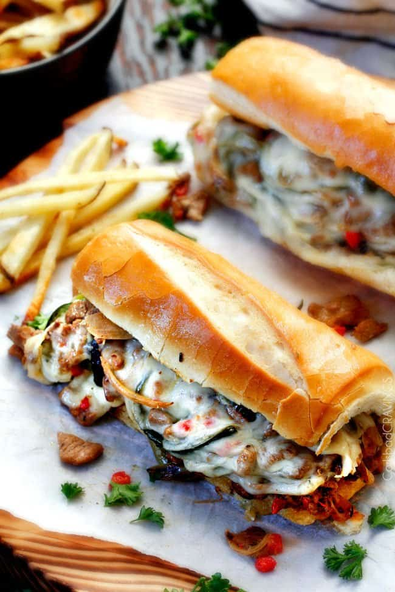

Cheesesteak

Description
Originating in Philadelphia, Pennsylvania, where two huge tourist destination philly cheesesteak rivals, Geno's and Pat's, compete, Philly Cheese Steak sandwiches make for a great game day food, guest food, or just a fun dinner any night of the week. Recipes differ based on preferences and based on a balance between budget and quality such as choosing between rib-eye and sirloin, and between american cheese, provolone, and Cheez Whiz. But there is little debate it should be on a hoagie roll, especially an Amoroso roll.
Ingredients
- Ribeye steak (substitutions: top sirloin or skirt)
- Olive oil
- Onion
- Bell peppers
- Poblano pepper
- Jarred cherry peppers
- Provolone cheese slices (substitutions: American, which is also has a mild flavor and consistency, or Cheeze Whiz, which is a favorite at Pat's or Geno's)
- Hoagie rolls (Amoroso's rolls are best but can be hard to come by and can be pricy)
- Marinade
- Spiced mayo
Steps
- Slice Beef Thinly: What makes amazing marinated steak more amazing is slicing it as thinly as possible before you marinate it. You can also tenderize and pound your steak even thinner after you slice it if you want to get a little crazy about it.
- Marinate Steak: The marinade is where all the flavor comes from and it tenderizes the meat. An example marinade consists of a simple mixture of Dijon, balsamic, Worcestershire and seasonings. Marinate the ribeye steak in the refrigerator for at least 6 hours or better yet marinate overnight. And don't poke holes in the steak
- Saute Veggies: After you saute your steak, onions and peppers
- Add cheese to filling: Seasoned mayonnaise (a simple mixture of mayo with some reserved marinade), sharp cheddar cheese and pimientos.
- Stir: Stir it all together.
- Assemble: Pile the cheese steak filling into the seasoned mayo slathered buns.
- More Cheese: Add more provolone cheese.
- Bake: Bake the Philly cheesesteaks for five minutes or so for the cheese to become soft and sticky and the buns to crisp up with the seasoned mayonnaise.